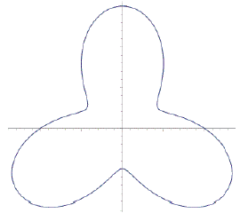
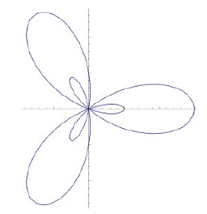
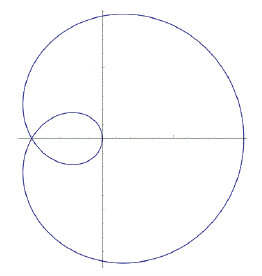
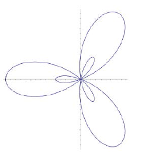
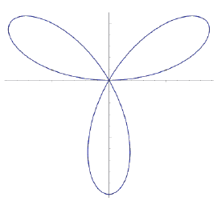
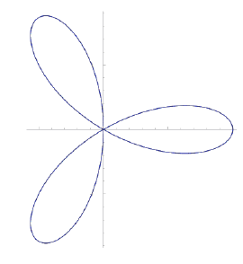
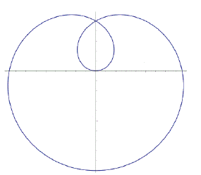
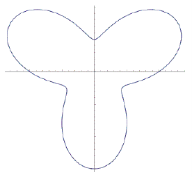

Problem #1:
| Math 1ZB3/1AA3 Academic Integrity Test Pledge
For this test, I make the following truthful statements:
All work submitted as part of this test is my own. All work was constructed without input from others, including individuals, companies, or services.
I have not received, I have not given, nor will I give or receive, any assistance to another student taking this test, including discussing the test with students in another section of the course or students writing this test at an earlier or later time.
I will ONLY use the CASIO fx-991 MS, MS+, ES or ES+. I will use no other graphing/problem-solving calculators, software, or programs during this test.
The only sources I will consult during the duration of this test are:
• The Math 1ZB3/1AA3 Textbook (digital or physical copy)
• My personal notes for Math 1ZB3/1AA3, authored only by myself (digital or physical notes)
I confirm that I am expected to exhibit honesty and use ethical behaviour in all aspects of the learning process. I confirm that it is my responsibility to understand what constitutes academic dishonesty under the Academic Integrity Policy.
Enter your full name to sign the above Academic Integrity Pledge: |
|
|
|
|
Problem #2:
| The population of Doombats in the fantasy land of NeverNever is decreasing exponentially due to an excess of hope & joy! It is noticed that over every 30 week period the number of Doombats
shrinks to of what it was.
Currently the population is at 180,000 Doombats. How many weeks from now will the population be at 18,000?
Round your answer to the nearest week. |
|
|
|
|
Problem #3:
| | Find the family of curves orthogonal to the family 2y2 + 7x2 = k when x > 0 and y > 0. |
|
|
|
(A) y2 + Cx7 = 0 (B) y = Ce7x/2 (C) y = (7/2)x + C (D) y = Cx2/7 (E) 7y2 − 2x2 = C |
Problem #4:
| Given f (x) has the Taylor series:
(x − 4)n
evaluate f (3)(4). |
|
|
|
|
Problem #5:
| | Which of the following is equivalent to the surface area of rotation of the function y =
on the
interval 1 < x < 74, rotated about the x-axis? |
|
|
|
(A) dx (B) dx (C) dx (D) dx (E) dx (F) dx (G) dx (H) 2πx dx |
Problem #6:
| | For the power series of (1 + x)1/4 use the binomial series formula to find the coefficient of xn, n > 1. |
|
|
|
(A) | (−1)n −1 4 · 8 · 12 · ⋯ · (4n − 4) | | 4n −1 n! |
(B) | (−1)n 5 · 9 · 13 · ⋯ · (4n − 3) | | 4n n! |
(C) | (−1)n 3 · 7 · 11 · ⋯ · (4n − 5) | | 4n −1 n! |
(D) | (−1)n 5 · 9 · 13 · ⋯ · (4n − 5) | | 4n n! |
(E) | (−1)n −1 3 · 7 · 11 · ⋯ · (4n − 5) | | 4n n! |
(F) | (−1)n −1 3 · 7 · 11 · ⋯ · (4n − 3) | | 4n n! |
(G) | (−1)n 4 · 8 · 12 · ⋯ · (4n − 4) | | 4n n! |
(H) | (−1)n −1 5 · 9 · 13 · ⋯ · (4n − 3) | | 4n −1 n! |
|
Problem #7:
| | If f (x) is a solution of y′ = , and f (1) = 0, then find f (e). |
|
|
|
(A) (B) 4e + 2 (C) − (D) 1 (E) 4 (F) 0 |
Problem #8:
| Which of the following statements are always true?
| (i)
If bn is conditionally convergent, then the ratio test shows |bn| converges. | | (ii) Only ratio or root tests are used to check if a series is absolutely convergent. | | (iii) If a geometric series is convergent with r < 0, then it is conditionally convergent. |
|
|
|
|
(A) none of them (B) (i) and (ii) only (C) (ii) only (D) (iii) only (E) all of them (F) (ii) and (iii) only (G) (i) only (H) (i) and (iii) only |
Problem #9:
| For the polar function given by
r = sin(θ/3)
which of the following is the corresponding polar
plot? |
|
|
|
(A)  (B)  (C)  (D)  (E)  (F)  (G)  (H)  |
Problem #10:
| In the process of solving the differential equation
x5y′ − 7x4y = cos(7x), x > 0,
which of the
following is an acceptable choice of integration factor? |
|
|
|
(A) e7x5/5 (B) esin(7x)/7 (C) (D) No such factor exists (E) (F) ecos(7x)/x5 dx |
Problem #11:
| A triangular window, with its top edge horizontal, is built in the side of a water tank. The window is 18 m tall, 9 m wide at the top, and can hold back 40 kN of force. Water is added to the tank until the window is about to burst.
If the density of water is 1000 kg/m3 and we approximate the gravitational constant as 10 m/s2, how high is the water above the bottom corner? |
|
|
|
(A) 2.88 m (B) 2.52 m (C) 3.63 m (D) 3.17 m (E) Insufficient Information |
Problem #12:
| Find the radius of convergence for the power series:
(5x + 10)n
|
|
|
|
(A) (B) (C) (D) 10 (E) 2 (F) 0 |
Problem #13:
| | Evaluate the area under the parametric curve given by x = t3, y = 5t − t2 and above the x-axis on the interval 0 < x < 125. |
|
|
|
|
Problem #14:
| Consider the following statements.
| (i)
( )2n converges
| | (ii) converges. |
Determine which of the above statements are True (1) or False (2).
So, for example, if you think that the answers, in the above order, are True,False, then you would enter '1,2' into the answer box below (without the quotes). |
|
|
|
|
Problem #15:
| | Let g(x) = 6x ln(8x) for 4 ≤ x ≤ 6. Which of the following is the result of using Taylor's inequality to find a bound on |g(x) − T2(x)|, where T2(x) is the second degree Taylor polynomial, centred at x = 5. |
|
|
|
|
Problem #16:
| Express the parametric curve x = , y = t2 + 4 in the Cartesian form y = f (x).
Enter the function f (x) into the answer box below. Do not include 'y = ' in your answer. |
|
|
|
|
|
|
(A) (B) None of these (C) (D) 42 (E) e4/9 − 1 (F) e4/9 |
|